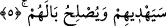

Müşriklerin şevket ve kuvvetleri kırılıp artık müminlerle savaşmaya tâkatleri
kalmayıncaya kadar bu esirler bırakılmaz. Ebû Hanife bu harbi Bedir savaşı olarak
yorumlamış, “hatta” kelimesinin meccânen salıvermek ve fidye almanın gayesi olduğunu
belirtmiştir. Buna göre mânâ; ağırlıklarını bırakıncaya ve harp bitinceye kadar esirler ya
salıverilir yahut onlardan fidye alınır demektir. Şâyet cins mânâsına hamledilirse bu
sefer, “darb” ve “şedd” yâni ya öldürülmelerinin yahut esir edilmelerinin gayesi olur.
Buna göre ise mânâ şöyledir: Müşrikler ya öldürülür ya da esir edilir. Nihâyet harp
cinsi ağırlıklarını bırakıp müşriklerin bir kuvvet ve şevketleri kalmayıncaya kadar
böyle yapılır.
Kâşifî şöyle demiştir: “…Harb ehli, harple ilgili silahları bırakıncaya kadar… İslam
dini devam ettiği müddetçe, Hz. İsa (a.s.) gelinceye kadar savaş hükmü devam
edecektir. Haberde bildirildiğine göre bu ümmetin son savaşı Deccal ile olacaktır.”
Küfür devam ettiği sürece harp de ebediyen kâim ve dâimdir.
“Allah dileseydi (kendisi) onlardan öc alırdı.” Bu intikam; meleklerin sayhası yahut
onların Bedir’de olduğu gibi müşrikleri devirmesi yahut müşriklerin görmediği cihetten
onlarla savaşmasıdır.
Âyetin “fakat sizi birbirinizle denemek için” kısmında şuna da işâret edilmektedir:
Kâfir nefsi dünya meşreplerinden ve nimetlerinden bir meşrebe başını uzattığını
bulduğunuz yerde, bu başın boynunu vurunuz. Onu o meşrepten kovunuz. Nihâyet bu
nefislere galebe çalıp hükümran olduğunuz zaman ve onları emriniz altına aldığınız
zaman artık onları şeriat erkânı ve tarikat adabıyla bağlayınız. Zira bu iki konuda yüksek
himmet sahipleri hakikat âlemine uçarlar. Artık vuslattan sonra mücâhedeyi terk ederek
bu nefisleri meccânen salıverin. Yahut nefislere galebe çaldıktan sonra mücâhedeyi terk
etme yerine çok ibadet ederek onları fidyeyle salıverin.
Muhalefet kılıcıyla nefisleri öldürmeye gelince bu durum taleb erbabının mezhebinde
her müçtehidin nazarına göre câiz olur. Zira bu müçtehitlerden her biri isabet etmiştir.
Bu durum, tâlib matlûbunu buluncaya, âşık mâşûkuna vâsıl oluncaya kadar böyledir. Bu
da nefse galebe çaldıktan sonra bir müddet uyuma ve bir gün oruç tutmayıp yemek
içmekle nefsin çilesini rahatlatarak ona müsâmaha etmek, bir de karşılaşacağı zor
durumlarla mücâhede edebilmesi için duygulara kuvvet kazandırmak içindir. Bu durum,
müridin şeyhten doğrudan sorup taleb etmesiyle veya topluluğun dilinin fetvâsıyla yahut
zamanın kutub ve gavsının firâsetiyle olur. Şâyet Allah dilerse, mücâhidin savaştaki
gayreti olmaksızın, bizzat celâl sıfatlarının tecellîsiyle nefisleri kahreder. “Fakat sizi
birbirinizle denemek için” Allah Teâlâ size savaşmayı emretti.
5. (Allah) onları doğru yola iletecek ve durumlarını düzeltecektir.